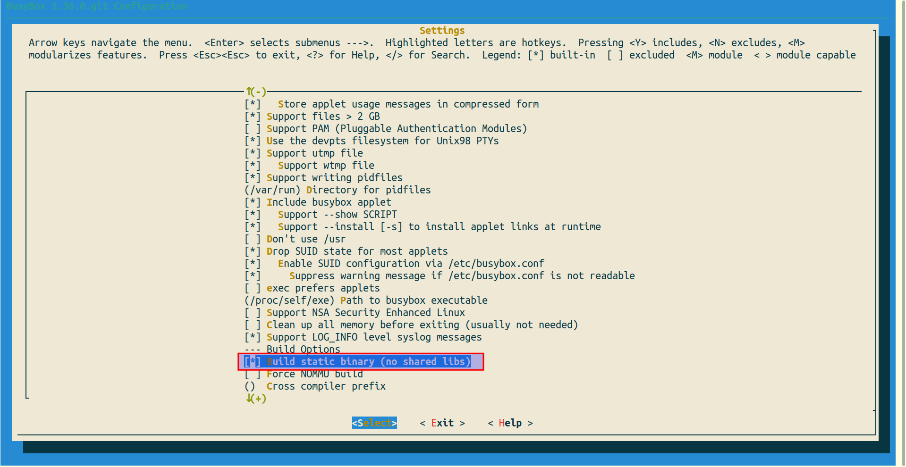
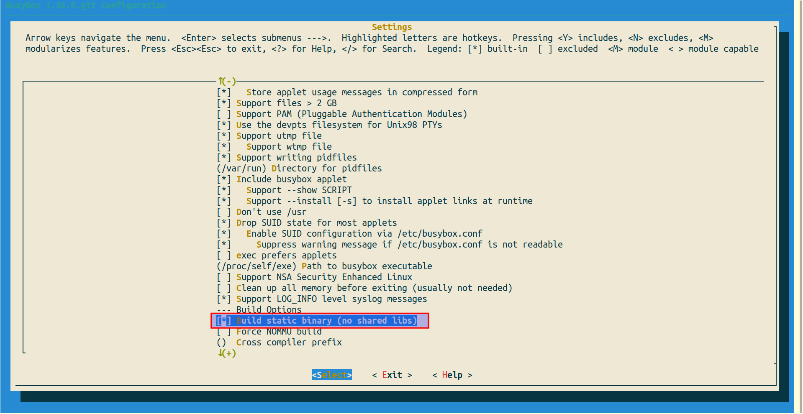
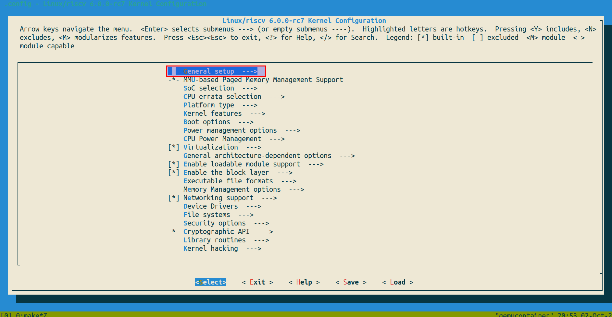
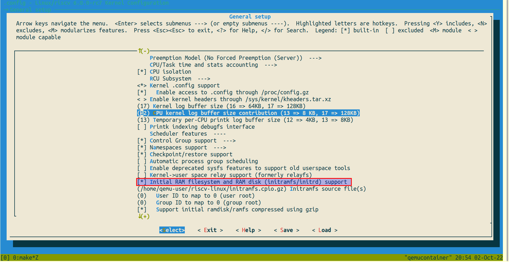
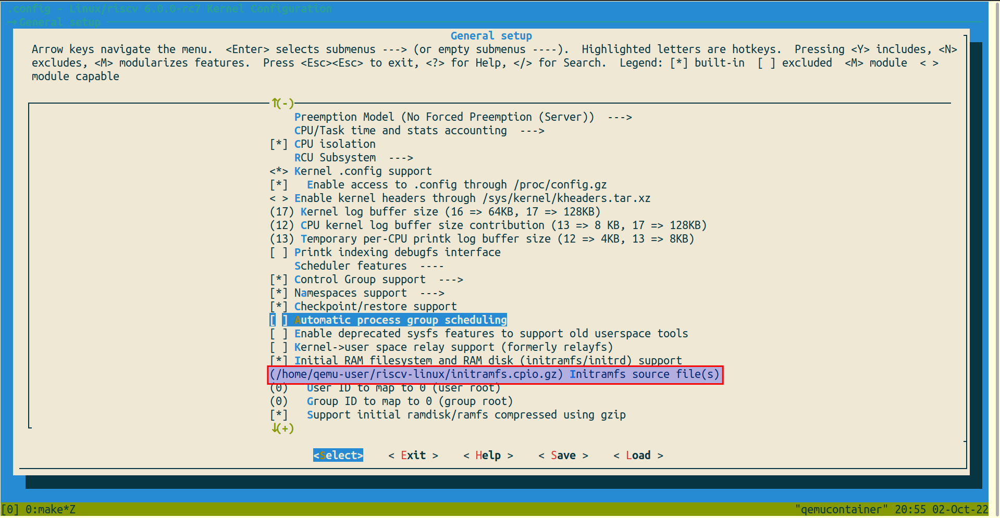
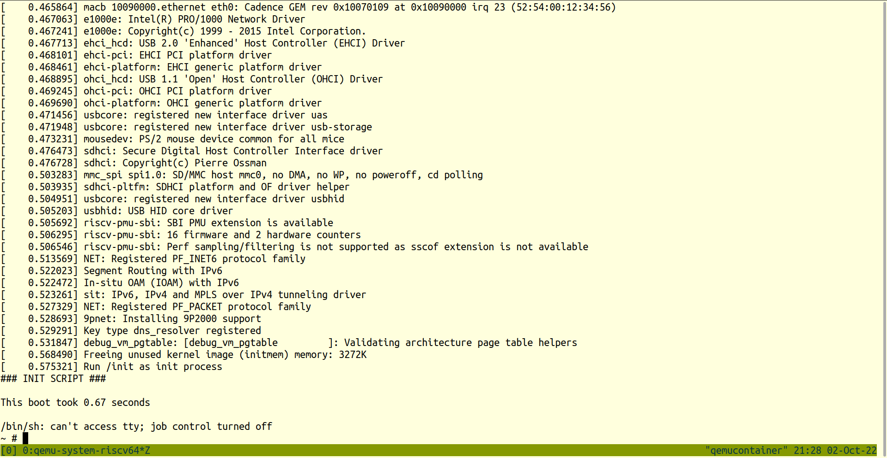

Building a RISCV Linux kernel and booting it in QEMU inside LXC container
Reference links:
- https://risc-v-getting-started-guide.readthedocs.io/en/latest/linux-qemu.html
- https://hackernoon.com/how-to-set-up-the-environment-for-riscv-64-linux-kernel-development-in-ubuntu-2004-si5p35kv
This documentation covers how to build a linux kernel with RISCV linux toolchain inside an un-privileged LXC container and then boot it on qemu. Doing this process on privileged lxc container makes life easier, but privileged containers always have security loop holes. For instance, their root id is mapped to root id of host machine. On the other hand un-privileged containers are the safest (see link).
Machine's and LXC Container's Operating System Specifications
At the time of creating this documentation, following is the specification of host machine and operating system.
- Host Machine: Ubuntu focal (20.04) 64-bit.
- LXC Container: Ubuntu jammy (22.04) 64-bit.
- LXC Container is unprivileged with non-sudo user.
NOTE: Throughout this documentation, name of the lxc container will be qemu_container or qemucontainer with non-sudo user as qemu-user which is running on ubuntu 22.04 and host machine x86. Do not confuse the name with assumption that it is booting on qemu emulator. It is just a naming convention.
Pre-requisites
Following programs may also have their own pre-requisites.
- Git: For cloning repositories of following programs. Install it with
[sudo] apt install git. - TMUX: For convenience of multiple terminals. Install it using
[sudo] apt install tmux - RISCV GNU toolchain built as linux: For compiling the linux kernel.
- Busybox: For Generating the binaries for linux kernel boot.
- QEMU Emulator: For booting the linux kernel
- Linux Kernel (latest version which is used at point of writing this documentation is
6.0.0)
The working directory inside lxc container for all of this documentation will be ~/riscv-linux or /home/qemu-user/riscv-linux.
NOTE: Busybox will not be built inside the lxc container rather it will be built in (any) host linux machine with sudo privileges.
3. RISCV GNU Toolchain
- Log in the lxc container to the non-sudo user (here SSH is used to log in).
- Install the prerequisites for building RISCV GNU TOOLCHAIN inside lxc container with
rootuser using command below.
apt-get install autoconf automake autotools-dev curl python3 libmpc-dev libmpfr-dev libgmp-dev gawk build-essential bison flex texinfo gperf libtool patchutils bc zlib1g-dev libexpat-dev libncurses-dev
- Clone the GNU toolchain using the command below.
git clone https://github.com/riscv-collab/riscv-gnu-toolchain.git
- Create a directory in which the RISCV GNU toolchain is desired to be installed (here it will be
/home/qemu-user/riscv-linux/riscv-gnu-installed) - Execute following command inside cloned repository with
--prefixas the absolute directory path to where the RISCV toolchain is to be installed
./configure --prefix=/home/qemu-user/riscv-linux/riscv-gnu-installed
- Execute following inside cloned repository (execution of this command will take a while to complete)
make linux -j$(nproc) # 'nproc' is the command used to determine the number of processors in machine so that 'make' can use parallelism.
- After the execution of command is complete, add
bindirectory created inside the riscv installation directory to the$PATHand add the expression to.bashrc. According to this documentation, following expression will be added to.bashrc.
PATH="/home/qemu-user/riscv-linux/riscv-gnu-installed/bin:$PATH"
- Check if the toolchain is installed by executing following commands.
exec $SHELL
riscv64-unknown-linux-gnu-gcc
Expected Output:
fatal error: no input files
compilation terminated.
- Now RISCV linux toolchain is ready !
4. Busybox
Busybox is the package for creating linux binutils and set of directories for linux to boot into. Busybox will be installed in host machine instead of lxc container. The reason for this is linux kernel requires block oriented device and character oriented device for it to boot. Those devices can be created using mknod command which can only be created inside a host machine with sudo privileges. Busybox will be used in creating initial ram disk file (in gz format) which is used to boot kernel. It does not matter at which operating system or on which machine this file is created. But the machine on which it is compiled, must also have RISCV GNU toolchain installed above.
- Clone Busybox using the command below.
git clone https://git.busybox.net/busybox
- Navigate to cloned directory.
cd busybox
- Before building busybox, we need to produce a configuration (.config file) for busybox. It is better to apply default configurations and then change only those which are desired.
make ARCH=riscv CROSS_COMPILE=riscv64-unknown-linux-gnu- defconfig
- After the command is executed, a
.configfile will be present in the busybox cloned directory. - Now, an additional option is to be enabled which enables busybox to build the libraries in the executable instead of separate shared libraries. For this purpose, execute the following command to access the configuration menu. Then go to
Settingsmenu by pressing enter and from there, enable[ ] Build static binary (no shared libs)by pressing space. After the option is enabled, exit by pressingesctwice two times and press yes to the prompt about file saving.
make ARCH=riscv CROSS_COMPILE=riscv64-unknown-linux-gnu- menuconfig
 

- Now that configuration is complete, build busybox by executing following command.
make ARCH=riscv CROSS_COMPILE=riscv64-unknown-linux-gnu- -j$(nproc)
- Execute following command which will produce all the basic linux utilities in
_installdirectory inbusyboxrepo directory.
make ARCH=riscv CROSS_COMPILE=riscv64-unknown-linux-gnu- -j$(nproc) install
- Navigate to
_installdirectory and createdevdirectory.
cd _install
mkdir dev
- Now, a linux
consoleand aramdevices are to be created insidedevdirectory. A fact to understand here is that, every device is a file in linux but they are special kind of files. A detail of these devices can be found here. In this documentationmknodcommand is used to create these devices.
sudo mknod dev/console c 5 1
sudo mknod dev/ram b 1 0
- After executing above commands, following files with names
ramandconsolewill be created as shown in the image below.

- Now an
initfile is needed because linux kernel does not boot itself, it rather searches forinitfile in the directories (read linux kernel messages during build procedure).initfile contains commands to mount some directories during boot (more information can be found here). Inbusybox/_install, create a file with following contents (be sure to make it executable withchmod +x init).
vim init
#!/bin/sh
echo "### INIT SCRIPT ###"
mkdir /proc /sys /tmp
mount -t proc none /proc #For processes
mount -t sysfs none /sys #For all the devices on the machine
mount -t tmpfs none /tmp #For virtual memory
echo -e "\nThis boot took $(cut -d' ' -f1 /proc/uptime) seconds\n"
exec /bin/sh
- Now that all the files are ready for linux to boot into, pack them in
cpioformat and then togzformat. It is becausecpioformat is in "Early userspace support" in linux kernel (see link) whereasgzformat is needed because it is one of the formats needed by qemu emulator. Following command produces a qemu-compatible initramfs file for linux kernel to boot in.
find -print0 | cpio -0oH newc | gzip -9 > ../initramfs.cpio.gz
- Command Details:
find -print0separates the file names with null charactercpio -0oH newcproduces an archive file innewcformatgzip -9creates a gz format zip file.-9represents the best compression level at the slowest speed../initramfs.cpio.gzrepresents the output file which is created in parent directory to present working directory.- At this point, our work with busybox is done.
- Copy the produced file into the lxc container (use
scpcommand if it is on ssh).
5. QEMU Emulator
- Install the pre-requisites of qemu emulator on lxc container with root user with following command (see link).
apt-get install git libglib2.0-dev libfdt-dev libpixman-1-dev zlib1g-dev ninja-build
- Clone the QEMU Emulator repository using the command below with
rootuser:
git clone https://github.com/qemu/qemu.git
- Build QEMU for RISCV with
rootuser using commands below (see link).
./configure --target-list=riscv64-softmmu
make -j$(nproc)
- For system-wide installation of QEMU Emulator, run following command with
rootuser.
make -j$(nproc) install
- After execution of this command, work with QEMU Emulator is done and its commands can be accessed anywhere.
6. Linux Kernel
- Clone the linux kernel from Linus Torvalds' repository using the command below.
git clone https://github.com/torvalds/linux.git
- Navigate to cloned repository.
cd linux
Building Linux kernel with riscv64-unknown-linux-gnu-gcc
- Before building linux kernel with RISCV toolchain a configuration file (.config) must be produced in its directory. First, produce a file with default configurations, then change configurations according to needs.
make ARCH=riscv CROSS_COMPILE=riscv64-unknown-linux-gnu- defconfig
make ARCH=riscv CROSS_COMPILE=riscv64-unknown-linux-gnu- menuconfig
- Above command will open configuration menu. Enter
General setup, scroll down and enableInitial RAM filesystem and RAM disk (initramfs/initrd) supportusingSpacekey. Then enter() Initramfs source file(s)and here put the absolute path toinitramfs.cpio.gzfile which was just created using busybox. For this documentation, it is/home/qemu-user/riscv-linux/initramfs.cpio.gz. Double-pressescand save the file.



- Now linux kernel is ready to be compiled with
riscv64-linux-gnu-gcctoolchain. So execute the command below.
make ARCH=riscv CROSS_COMPILE=riscv64-unknown-linux-gnu- -j$(nproc)
- If the above command successfully executed without any errors, there must be
Kernel: arch/riscv/boot/Image.gz is readyprinted on terminal. On newer linux kernels, it might be scrolled up a little, useCtrl-shift-fto find it.
Booting into the linux kernel using QEMU emulator
Now that everything is ready, execute the following command in linux/arch/riscv/boot/ directory to boot linux on sifive's unleashed.
qemu-system-riscv64 -kernel Image -machine sifive_u -nographic
- Command Details
qemu-system-riscv64is the qemu built for riscv64-kerneltakes the image produced by linux kernel compilation and is present inlinux/arch/riscv/boot/directory.-machinetakes one of the machine names as arguments available inqemu-system-riscv64. Available machines can be listed on terminal using commandqemu-system-riscv64 -machine help.-nographicrestricts the use of GUI (which is a better option considering lxc container does not support gtk initialization).- If everything goes on right, the kernel will boot successfully as shown in the picture below. 